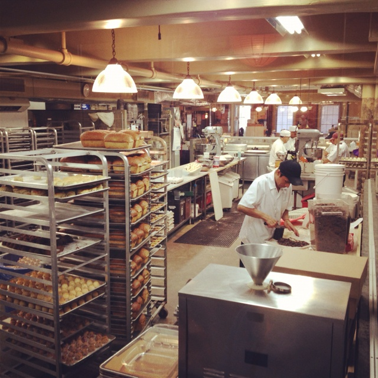
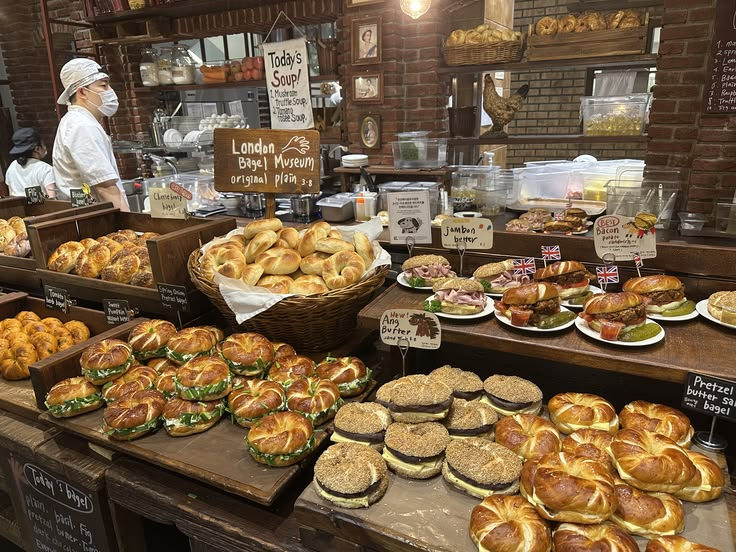

Profil Usaha
Tentang Bakpia.id
Berdiri sejak 2020 di Yogyakarta, kami membuat bakpia dengan resep keluarga dan bahan pilihan. Setiap box dipanggang bertahap agar kulitnya berlapis sempurna, lalu dikemas higienis setelah matang.

Cerita Usaha
Semua dimulai dari resep nenek yang diwariskan turun-temurun. Awalnya kami hanya membuat bakpia untuk keluarga dan tetangga, lalu mulai menerima pesanan kecil-kecilan. Karena sambutan hangat dan kepercayaan para penikmat bakpia, kami memberanikan diri membuka produksi sendiri secara resmi pada tahun 2020.
Kini setiap pagi kami memanggang ratusan box di dapur kami di Yogyakarta. Prinsip kami sederhana: bahan pilihan bermutu, proses sabar, dan tidak menjual stok lama. Setiap box dikemas setelah bakpia benar-benar dingin seimbang, sehingga tekstur kulit tetap renyah saat sampai di tangan Anda.
Kami percaya oleh-oleh bukan sekadar makanan manis, melainkan penghantar kehangatan cerita. Itu sebabnya setiap box yang keluar dari dapur kami disiapkan dengan ketulusan dan standar terbaik agar penerimanya merasakan keistimewaan rasa khas Yogyakarta.
Nilai yang Kami Bawa
- Resep Autentik Warisan: Menjaga takaran rasa tradisional dengan tingkat manis seimbang agar tidak eneg.
- Bahan Alami Pilihan: Menggunakan kacang hijau berkualitas, ubi asli, dan daun pandan segar tanpa pengawet buatan.
- Higienis & Bergaransi Rasa: Dapur produksi terstandarisasi bersih serta pengemasan rapat menjaga kesegaran hingga tiba di tujuan.
Pengrajin & Dapur Produksi
